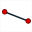
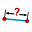
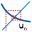

Depuis la version 5.0, une nouvelle interface plus ergonomique est disponible.
Les icônes de la barre de gauche sont maintenant regroupées par type.
Un clic sur la flèche à droite de l'icône (ou un double clic sur l'icône) fait apparaître les autres icônes de même type. L'icône de l'outil choisi remplace alors l'icône précédente à gauche.
Voici un exemple quand on déroule la première icône de création de points (en présence d'un repère et d'une fonction et en niveau avancé) :

L'icône  qui termine certaines barres d'outils une fois déroulées propose d'autres outils d'usage moins courant dans une boîte de dialogue.
qui termine certaines barres d'outils une fois déroulées propose d'autres outils d'usage moins courant dans une boîte de dialogue.
|
Sélectionnez cet outil pour déplacer un point, un affichage, agrandir ou réduire une marque d'angle. Vous pouvez aussi faire glisser la figure entière. |
|
Regroupe toutes les icônes de création et de manipulation de points (Certaines icônes, comme celle de création d'un point par ses coordonnées, n'apparaîtront que si la figure contient au moins un repère). |
|
Regroupe toutes les icônes de création de droites. |
 |
Regroupe toutes les icônes de création de segments, demi-droites, vecteurs. |
|
Regroupe toutes les icônes de création de cercles et arcs de cercle. |
|
Regroupe toutes les icônes de création de lignes et de polygones. |
|
Regroupe toutes les icônes de création de marques de segments ou marques d'angles. |
Regroupe les icônes de création de lieu de points, de courbes de fonctions, de graphes de suites récurrentes et de lieux d'objets (les icônes de création de lieu de point ou d'objet générés par variable n'apparaîtront que si au moins une variable a déjà été créée). |
|
|
Regroupe toutes les icônes de transformation géométrique et le rapporteur virtuel. |
 ou |
Regroupe toutes les icônes de mesure. Certaines icônes peuvent ne pas être disponibles. Par exemple, si la figure ne comporte pas de longueur unité, l'icône de mesure de longueur ne sera pas disponible. |
|
Regroupe toutes les icônes d'affichage de texte, LaTeX, de valeur ou d'image, création de macros. |
|
Regroupe toutes les icônes de création de curseurs, calculs, fonctions, suites numériques, repères, curseurs. |
|
Regroupe toutes les icônes de création de surfaces et demi-plan. |
A noter que certaines icônes ne seront disponibles que si le contexte le permet.
Exemple 1 : L'icône  de création d'un cercle par son rayon n'apparaît que si la figure possède une longueur unité.
de création d'un cercle par son rayon n'apparaît que si la figure possède une longueur unité.
Exemple 2 : L'icône  de mesure de coefficient directeur de droite n'apparaît que si un repère au moins est présent.
de mesure de coefficient directeur de droite n'apparaît que si un repère au moins est présent.
Exemple 3 : L'icône

de création d'un graphe de suite récurrente réelle n'apparaît que si au moins un repère est présente et au moins une suite récurrente réelle a été créée.